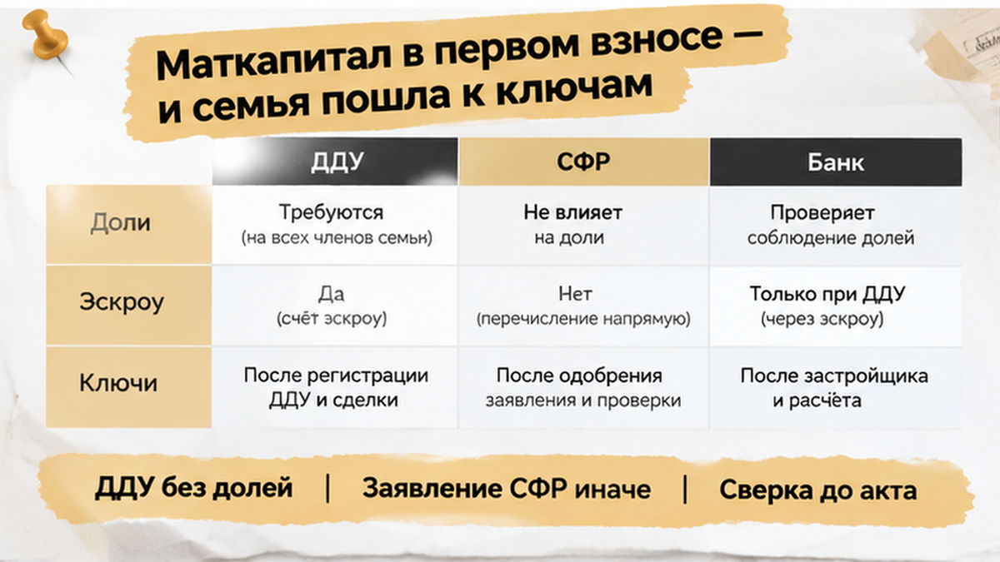
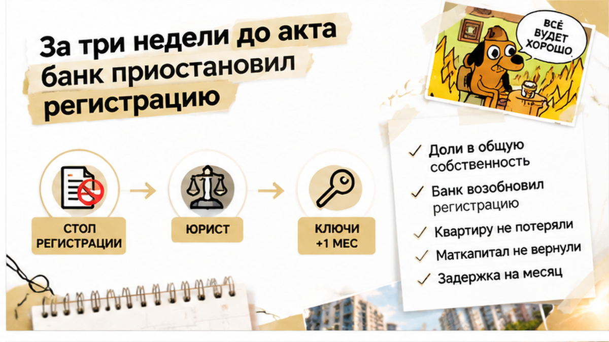
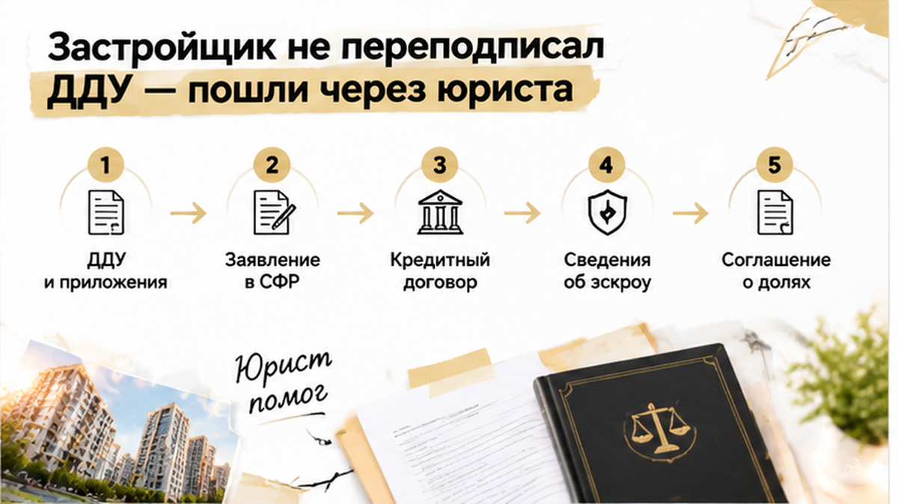
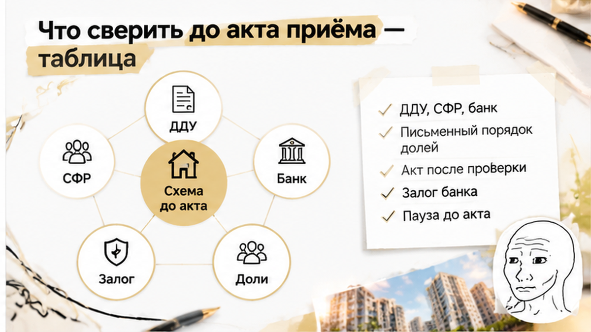

В Тюмени семья с двумя детьми уже видела финиш: дом сдан, ДДУ зарегистрирован, маткапитал перечислен на эскроу, до акта и ключей оставалось около трёх недель. В первоначальный взнос вошли деньги сертификата и собственные накопления, поэтому сделка казалась почти закрытой. Но перед регистрацией квартиры банк остановил сопровождение: в ДДУ, заявлении для СФР и кредитных документах по-разному описали будущие доли детей. Ключи пришлось отложить, пока все бумаги не выстроили в одну понятную цепочку.
Я, Святослав Шакин, The Риэлтор из Тюмени. В Telegram и MAX разбираю места, где новостройка спотыкается уже перед финишем — когда дом сдан, а документы внезапно требуют ещё одного круга.
Квартиру в тюменской новостройке семья покупала по семейной ипотеке. В первоначальный взнос направили маткапитал и собственные накопления, заявление о распоряжении средствами подали через банк, после чего деньги перечислили на эскроу.
ДДУ зарегистрировали. Для покупателя это выглядит как финальная отметка: договор есть, деньги внесены, дом скоро передадут. Но регистрация ДДУ подтверждает право требовать от застройщика будущую квартиру, а не право собственности на неё. Собственность появляется позже — после ввода дома, передачи объекта и регистрации квартиры.
Когда дом ввели и застройщик начал приглашать покупателей за актами, до ключей оставалось примерно три недели. Банк повторно проверил пакет и обнаружил расхождение в формулировках об общей собственности родителей и детей.
Маткапитал не означает, что доли детей уже должны существовать в момент подписания ДДУ. Но жильё, купленное с его использованием, в итоге нужно оформить в общую собственность владельца сертификата, супруга и всех детей — с определением долей соглашением.

В ДДУ и приложениях не было точной формулировки, связывающей обязанность семьи с последующим оформлением квартиры на родителей и детей. В заявлении для СФР эту обязанность описали иначе, а в кредитном пакете банка использовали ещё одну редакцию.
По отдельности документы казались рабочими. Вместе они не отвечали на простой вопрос: кто, когда и на каком основании оформляет доли после регистрации права.
Зарегистрированный ДДУ и перечисленный маткапитал закрывают отдельные этапы сделки, но не заменяют проверку будущей общей собственности. Это не то же самое, что ситуация, когда семейную ипотеку одобрили, а эскроу с маткапиталом не открылся. Здесь деньги дошли до эскроу, дом сдали, но документы не совпали перед переходом к собственности.
Маткапитал можно направить на первоначальный взнос по ипотеке, не дожидаясь трёх лет ребёнка. Однако после передачи квартиры и регистрации права обязанность оформить жильё в общую собственность сохраняется. Обычно ориентируются на письменное обязательство сделать это в течение шести месяцев после передаточного акта, а при ипотеке — после акта и снятия залога.
С марта 2020 года отдельное нотариальное обязательство для подачи в СФР обычно не требуется. Но отмена документа не отменила саму обязанность выделить доли детям.
Банк не расторгал ДДУ и не отменял покупку. Он приостановил внутреннее сопровождение регистрации права, пока пакет не приведут к единой формулировке. СФР тоже не запускал автоматический возврат денег: фонд задал вопросы по распоряжению маткапиталом.
Поэтому фраза «ДДУ уже зарегистрирован» не должна заканчивать проверку. В сделке с ипотекой и маткапиталом нужно сопоставить ДДУ, заявление в СФР и кредитные документы до подписания акта.
Дом уже ввели, ДДУ зарегистрировали, первоначальный взнос внесли, а деньги семьи и материнского капитала лежали на эскроу. До подписания акта и получения ключей оставалось около трёх недель — именно тогда банк остановил подготовку регистрации права собственности.
Договор не расторгали и квартиру у семьи не забирали: документы попросили привести к одной понятной схеме. В ДДУ и приложениях по-разному описывалась будущая доля детей. Для покупателя это выглядело технической разницей, но банку требовалось однозначно понимать, кто станет собственником, когда и на каком основании.
Зарегистрированный ДДУ подтверждает право требовать от застройщика будущую квартиру, но ещё не является правом собственности. Оно появляется после передачи объекта и оформления квартиры, поэтому перед финишем банк снова проверяет пакет.
Такая точка риска возникает, когда в одной сделке соединены семейная ипотека, маткапитал и эскроу: каждый документ по отдельности выглядит рабочим, а вместе даёт расхождение.
По части 4 статьи 10 закона № 256-ФЗ жильё, купленное с использованием материнского капитала, должно перейти в общую собственность владельца сертификата, супруга и всех детей — с определением долей по соглашению. Детские доли не обязаны быть вписаны в ДДУ до передачи дома, но будущая обязанность оформить общую собственность должна одинаково отражаться в связанных документах.
Вопросы возникли и у Социального фонда России. Это не означало автоматический возврат маткапитала или отказ от сделки, однако противоречие требовалось исправить письменно. При ипотеке к цепочке добавляется залог банка, поэтому устного обещания «после ключей всё оформим» недостаточно.
Акт и выдачу ключей отложили: сначала нужно было определить, какой документ исправлять и в каком виде банк и СФР примут обновлённый пакет.
Сначала семья попросила застройщика бесплатно переподписать ДДУ. Но договор уже прошёл государственную регистрацию и был связан с ипотекой, эскроу, заявлением на распоряжение маткапиталом и обязательствами перед банком. Простая правка текста проблему не закрывала.
Юрист сверил зарегистрированный ДДУ и приложения, кредитные документы, заявление о распоряжении маткапиталом, а также переписку о подготовке акта. Если изменить только ДДУ, прежняя формулировка могла остаться в кредитном или социальном пакете.
После проверки подготовили дополнительное соглашение к ДДУ и отдельное соглашение о будущих долях. Важно было связать доли детей с режимом собственности супругов, условиями ипотеки и порядком регистрации после передачи квартиры. Если меняется режим собственности супругов, может потребоваться нотариальное оформление.
Отдельное нотариальное обязательство для подачи в Социальный фонд с марта 2020 года обычно не требуется. Но обязанность выделить детям доли сохраняется: фраза «потом оформите у нотариуса» не заменяет письменный порядок, одинаково отражённый в документах семьи, банка и СФР.
Застройщик оформил дополнение, юрист проверил формулировки, банк получил согласованный комплект, и внутреннюю приостановку регистрации сняли. Но прежний график вернуть не удалось: акт и выдачу ключей перенесли примерно на месяц.
Семья не стала подписывать документы в спешке и полагаться на устное обещание менеджера. Зарегистрированный ДДУ и открытый эскроу сами по себе не гарантируют беспроблемный переход к собственности: при ипотеке и маткапитале все документы должны одинаково описывать будущие доли.
Похожий риск разбирали в истории, где ипотеку одобрили, но регистрацию права остановили.

После отказа застройщика бесплатно переподписывать зарегистрированный ДДУ семье пришлось заново проверить договор, заявление в Социальный фонд России и кредитный пакет банка. По отдельности формулировки выглядели знакомо, но вместе не объясняли, как квартира станет общей собственностью родителей и детей.
Юрист подготовил дополнительное соглашение к ДДУ и соглашение о будущих долях. В них закрепили обязанность оформить квартиру в общую собственность владельца сертификата, супруга и обоих детей после передачи объекта и регистрации права. Порядок согласовали с банком, включая снятие залога.
Отсутствие оформленных детских долей в ДДУ само по себе ещё не означает безусловную ошибку: до регистрации права семья имеет требование к застройщику, а не собственность. Но будущая обязанность должна быть описана одинаково в ДДУ, заявлении в СФР и банковских документах.
После согласования исправленный пакет снова направили на проверку. Банк возобновил подготовку регистрации, однако первоначальный график вернуть не удалось: подписание акта и выдачу ключей перенесли примерно на месяц.
Квартиру семья не потеряла, ДДУ не расторгали, автоматического возврата маткапитала не произошло. Ценой ошибки стало время: документы начали приводить в порядок, когда дом уже сдали и до ключей оставались считаные недели.
Доли детям нужно фиксировать прямо в ДДУ или отдельным соглашением до подписания: где бы вы поставили красную линию, если ключи уже на подходе?

Перед актом приёма-передачи стоит проверить не только квартиру и дату выдачи ключей. При маткапитале и ипотеке важна вся связка: ДДУ, заявление в СФР, кредитный договор, сведения об эскроу и будущая регистрация права.
| Что проверить | С чем сравнить | На что обратить внимание |
|---|---|---|
| ДДУ и приложения | Заявление в СФР и кредитный пакет | Одинаково ли описана обязанность оформить жильё в общую собственность владельца сертификата, супруга и всех детей |
| Сумма и источник первоначального взноса | Кредитный договор, заявление о распоряжении маткапиталом, сведения об эскроу | Совпадают ли собственные средства, маткапитал и порядок перечисления денег |
| Условия банка | Проект регистрации права и будущие документы на квартиру | Какие бумаги потребуются до регистрации и после снятия залога |
| Акт приёма-передачи | Сроки регистрации и раскрытия эскроу | Не подписывается ли акт раньше, чем закрыты вопросы по документам |
| Будущее соглашение о долях | Режим собственности супругов и условия ипотеки | Достаточна ли простая письменная форма или понадобится нотариальное оформление |
Запросите у банка срок исполнения обязанности по долям и перечень документов для регистрации. При ипотеке этот срок могут связывать с передачей квартиры и снятием залога, поэтому устного объяснения менеджера недостаточно.
С марта 2020 года отдельное нотариальное обязательство для подачи в СФР обычно не требуется. Но обязанность выделить доли детям сохраняется: она не исчезает после регистрации ДДУ и перечисления маткапитала на эскроу.
Сопоставьте документы до подписания акта. Если формулировки расходятся, сначала установите, что исправлять и кто согласует изменения: застройщик не обязан бесплатно переподписывать зарегистрированный договор из-за несостыковки, найденной перед ключами.
Похожие сбои возникают и в других связках. Например, условия семейной ипотеки и эскроу с маткапиталом могут не совпасть, а банк — остановить сопровождение сделки перед финишем. При переносе ключей полезно заранее проверить и условия эскроу.
Если банк не подтверждает готовность пакета, акт лучше не подписывать до получения понятного письменного ответа. Разумнее поставить паузу до брони или до акта, чем переносить проблему в регистрацию права.

Я разбираю такие узкие места в сделках с новостройками Тюмени без общих страшилок и универсальных обещаний. Подписывайтесь на Telegram The Риэлтор и добавляйтесь в MAX — там можно посмотреть, что проверить до даты ключей, а не после остановки регистрации.
В этой истории семья дождалась ключей после исправления документов и повторной проверки. Сработала не надежда, что менеджер «сам всё оформит», а сверка цепочки: ДДУ ↔ СФР ↔ банк. Обязанность по долям закрепили письменно, пакет согласовали, регистрацию возобновили.